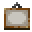
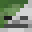

O mnie
defective@PC:~$ cat o_mnie.txtJestem Defekt! Zapalony deweloper-hobbista.
W wolnym czasie zajmuję się pisaniem własnych projektów, oraz tworzeniem pluginów i modów Minecraft.
Programowanie to moja pasja, dlatego zawsze daję z siebie wszystko!
Umiejętności
defective@PC:~$ cat skillz.txt- Świetna znajomość Javy od ponad 6 lat, pozwalająca mi na realizację bardziej zaawansowanych projektów
- Umiejętność pisania pluginów, modów, a nawet klientów i botów Minecraft
- Tworzenie i prowadzenie serwerów Minecraft, od początku, aż do końca
- Tworzenie interaktywnych stron internetowych, oraz integrowanie ich z innymi projektami (w tym serwerami Minecraft)
Moje projekty Minecraft
 Malowanie
Maluj co tylko przyjdzie Ci do głowy na własnym płótnie.
Po skończeniu możesz podzielić się swoim dziełem z całym światem - bez wychodzenia z gry!
Zobacz więcej
Po skończeniu możesz podzielić się swoim dziełem z całym światem - bez wychodzenia z gry!
Zobacz więcej
 Morphed
Jak wyglądałby świat bez graczy? Możesz się przekonać!
Tryb Morphed to survival, w którym to Ty stajesz się potworem!
Zobacz więcej
Zobacz więcej